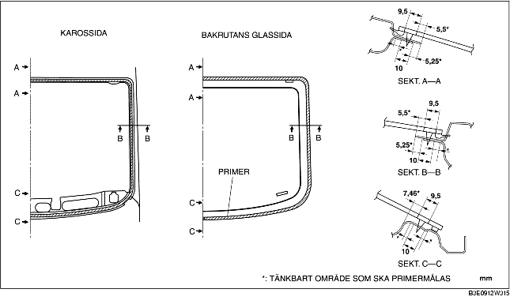
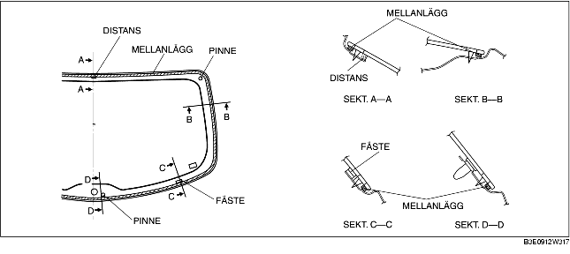
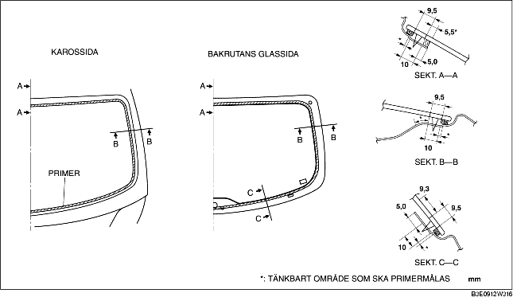

1. Skär bort den gamla tätningen med en rakbladskniv så att ca 1-2 mm {0,04-0,07 tum} tjockt tätningsmedel finns kvar längs ramens omkrets.
2. Om allt tätningsmedel försvunnit på något ställe, avfetta och sätt på lite primer och låt torka under cirka 30 minuter. Lägg sedan på ett cirka2 mm {0,08 tum} tjockt lager tätningsmedel.
3. Rengör och avfetta runtom cirka 50 mm {1,97 tum} från glasets ände och bindningsytan på karossen.
4. Vid installation av en återanvänd bakruta ska bakrutelisten monteras enligt följande procedur.
5. Lägg på glasprimer på bakrutan och karossprimer på bakrutans tätningslist så som figuren visar. Låt torka i cirka 30 minuter.

6. Applicera tätningsmedel på glasets fastsättningsyta enligt bilden.
7. Sätt in positioneringsstiften i karossen och montera sedan bakrutan.
8. Tryck på bakrutans stift så att de greppar i karosshållarna.
9. Tryck runt hela glasets omkrets så att tätningslistens gap ligger inom angivna värden.
10. Anslut uppvärmningstrådarnas kontakt.
11. Montera följande delar:
12. Låt tätningsmedlet härda ordentligt.
13. Lägg på löddrande vatten på bakrutans tätningslistsida, och blås luft från interiören, och kontrollera sedan att det inte finns några bubblor eller luftläckage.
1. Skär bort den gamla tätningen med en rakbladskniv så att ca 1-2 mm {0,04-0,07 tum} tjockt tätningsmedel finns kvar längs ramens omkrets.
2. Om allt tätningsmedel försvunnit på något ställe, avfetta och sätt på lite primer och låt torka under cirka 30 minuter. Lägg sedan på ett cirka2 mm {0,08 tum} tjockt lager tätningsmedel.
3. Rengör och avfetta runtom cirka 50 mm {1,97 tum} från glasets ände och bindningsytan på karossen.
4. Montera mellanlägget längs rutans omkrets.

5. Sätt fast fästena och distansen runt området som visas i figuren.
6. Fäst stiften vid sätespositionerna, enligt markeringarna, under demonteringen.
7. Lägg på glasprimer på bakrutan och karossprimer på bakrutans tätningslist så som figuren visar. Låt torka i cirka 30 minuter.

8. Applicera tätningsmedel på glasets fastsättningsyta enligt bilden.
9. Sätt in positioneringsstiften i karossen och montera sedan bakrutan.
10. Tryck på bakrutans stift så att de greppar i karosshållarna.
11. Tryck helt och hållet längs rutans hela omkrets.
12. Anslut uppvärmningstrådarnas kontakt.
13. Montera följande delar:
14. Låt tätningsmedlet härda ordentligt.
15. Lägg på löddrande vatten på bakrutans tätningslistsida, och blås luft från interiören, och kontrollera sedan att det inte finns några bubblor eller luftläckage.